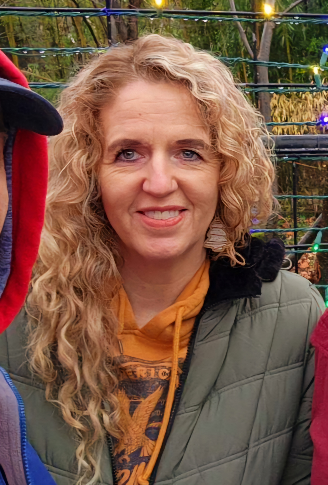

Kathlene Arnold | WDD 130
My name is Kathlene Arnold. I am an older student. I have 4 children and they are all grown. I am finishing my degree that I started in the 80's. Why? Good question. I sometimes ask myself that. Why did I pick a computer science certificate? Good question. Somedays I even have an answer. Today I do not.